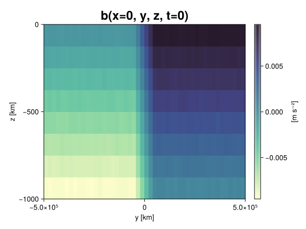
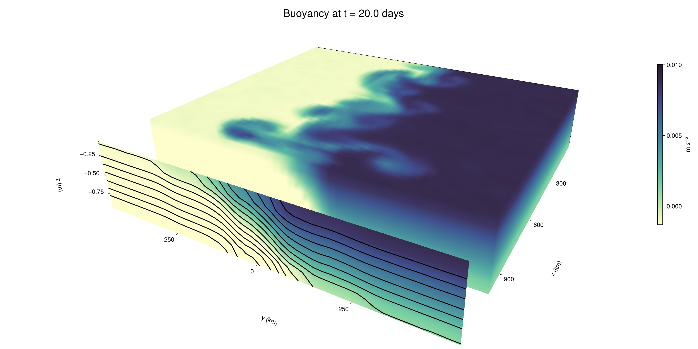

Baroclinic adjustment
In this example, we simulate the evolution and equilibration of a baroclinically unstable front.
Install dependencies
First let's make sure we have all required packages installed.
using Pkg
pkg"add Oceananigans, CairoMakie"using Oceananigans
using Oceananigans.UnitsGrid
We use a three-dimensional channel that is periodic in the x direction:
Lx = 1000kilometers # east-west extent [m]
Ly = 1000kilometers # north-south extent [m]
Lz = 1kilometers # depth [m]
grid = RectilinearGrid(size = (48, 48, 8),
x = (0, Lx),
y = (-Ly/2, Ly/2),
z = (-Lz, 0),
topology = (Periodic, Bounded, Bounded))48×48×8 RectilinearGrid{Float64, Periodic, Bounded, Bounded} on CPU with 3×3×3 halo
├── Periodic x ∈ [0.0, 1.0e6) regularly spaced with Δx=20833.3
├── Bounded y ∈ [-500000.0, 500000.0] regularly spaced with Δy=20833.3
└── Bounded z ∈ [-1000.0, 0.0] regularly spaced with Δz=125.0Model
We built a HydrostaticFreeSurfaceModel with an ImplicitFreeSurface solver. Regarding Coriolis, we use a beta-plane centered at 45° South.
model = HydrostaticFreeSurfaceModel(; grid,
coriolis = BetaPlane(latitude = -45),
buoyancy = BuoyancyTracer(),
tracers = :b,
momentum_advection = WENO(),
tracer_advection = WENO())HydrostaticFreeSurfaceModel{CPU, RectilinearGrid}(time = 0 seconds, iteration = 0)
├── grid: 48×48×8 RectilinearGrid{Float64, Periodic, Bounded, Bounded} on CPU with 3×3×3 halo
├── timestepper: QuasiAdamsBashforth2TimeStepper
├── tracers: b
├── closure: Nothing
├── buoyancy: BuoyancyTracer with ĝ = NegativeZDirection()
├── free surface: ImplicitFreeSurface with gravitational acceleration 9.80665 m s⁻²
│ └── solver: FFTImplicitFreeSurfaceSolver
├── advection scheme:
│ ├── momentum: WENO reconstruction order 5
│ └── b: WENO reconstruction order 5
└── coriolis: BetaPlane{Float64}We start our simulation from rest with a baroclinically unstable buoyancy distribution. We use ramp(y, Δy), defined below, to specify a front with width Δy and horizontal buoyancy gradient M². We impose the front on top of a vertical buoyancy gradient N² and a bit of noise.
"""
ramp(y, Δy)
Linear ramp from 0 to 1 between -Δy/2 and +Δy/2.
For example:
```
y < -Δy/2 => ramp = 0
-Δy/2 < y < -Δy/2 => ramp = y / Δy
y > Δy/2 => ramp = 1
```
"""
ramp(y, Δy) = min(max(0, y/Δy + 1/2), 1)
N² = 1e-5 # [s⁻²] buoyancy frequency / stratification
M² = 1e-7 # [s⁻²] horizontal buoyancy gradient
Δy = 100kilometers # width of the region of the front
Δb = Δy * M² # buoyancy jump associated with the front
ϵb = 1e-2 * Δb # noise amplitude
bᵢ(x, y, z) = N² * z + Δb * ramp(y, Δy) + ϵb * randn()
set!(model, b=bᵢ)Let's visualize the initial buoyancy distribution.
using CairoMakie
# Build coordinates with units of kilometers
x, y, z = 1e-3 .* nodes(grid, (Center(), Center(), Center()))
b = model.tracers.b
fig, ax, hm = heatmap(view(b, 1, :, :),
colormap = :deep,
axis = (xlabel = "y [km]",
ylabel = "z [km]",
title = "b(x=0, y, z, t=0)",
titlesize = 24))
Colorbar(fig[1, 2], hm, label = "[m s⁻²]")
fig
Simulation
Now let's build a Simulation.
simulation = Simulation(model, Δt=20minutes, stop_time=20days)Simulation of HydrostaticFreeSurfaceModel{CPU, RectilinearGrid}(time = 0 seconds, iteration = 0)
├── Next time step: 20 minutes
├── Elapsed wall time: 0 seconds
├── Wall time per iteration: NaN days
├── Stop time: 20 days
├── Stop iteration : Inf
├── Wall time limit: Inf
├── Callbacks: OrderedDict with 4 entries:
│ ├── stop_time_exceeded => Callback of stop_time_exceeded on IterationInterval(1)
│ ├── stop_iteration_exceeded => Callback of stop_iteration_exceeded on IterationInterval(1)
│ ├── wall_time_limit_exceeded => Callback of wall_time_limit_exceeded on IterationInterval(1)
│ └── nan_checker => Callback of NaNChecker for u on IterationInterval(100)
├── Output writers: OrderedDict with no entries
└── Diagnostics: OrderedDict with no entriesWe add a TimeStepWizard callback to adapt the simulation's time-step,
conjure_time_step_wizard!(simulation, IterationInterval(20), cfl=0.2, max_Δt=20minutes)Also, we add a callback to print a message about how the simulation is going,
using Printf
wall_clock = Ref(time_ns())
function print_progress(sim)
u, v, w = model.velocities
progress = 100 * (time(sim) / sim.stop_time)
elapsed = (time_ns() - wall_clock[]) / 1e9
@printf("[%05.2f%%] i: %d, t: %s, wall time: %s, max(u): (%6.3e, %6.3e, %6.3e) m/s, next Δt: %s\n",
progress, iteration(sim), prettytime(sim), prettytime(elapsed),
maximum(abs, u), maximum(abs, v), maximum(abs, w), prettytime(sim.Δt))
wall_clock[] = time_ns()
return nothing
end
add_callback!(simulation, print_progress, IterationInterval(100))Diagnostics/Output
Here, we save the buoyancy, $b$, at the edges of our domain as well as the zonal ($x$) average of buoyancy.
u, v, w = model.velocities
ζ = ∂x(v) - ∂y(u)
B = Average(b, dims=1)
U = Average(u, dims=1)
V = Average(v, dims=1)
filename = "baroclinic_adjustment"
save_fields_interval = 0.5day
slicers = (east = (grid.Nx, :, :),
north = (:, grid.Ny, :),
bottom = (:, :, 1),
top = (:, :, grid.Nz))
for side in keys(slicers)
indices = slicers[side]
simulation.output_writers[side] = JLD2OutputWriter(model, (; b, ζ);
filename = filename * "_$(side)_slice",
schedule = TimeInterval(save_fields_interval),
overwrite_existing = true,
indices)
end
simulation.output_writers[:zonal] = JLD2OutputWriter(model, (; b=B, u=U, v=V);
filename = filename * "_zonal_average",
schedule = TimeInterval(save_fields_interval),
overwrite_existing = true)JLD2OutputWriter scheduled on TimeInterval(12 hours):
├── filepath: ./baroclinic_adjustment_zonal_average.jld2
├── 3 outputs: (b, u, v)
├── array type: Array{Float64}
├── including: [:grid, :coriolis, :buoyancy, :closure]
├── file_splitting: NoFileSplitting
└── file size: 30.7 KiBNow we're ready to run.
@info "Running the simulation..."
run!(simulation)
@info "Simulation completed in " * prettytime(simulation.run_wall_time)[ Info: Running the simulation...
[ Info: Initializing simulation...
[00.00%] i: 0, t: 0 seconds, wall time: 27.914 seconds, max(u): (0.000e+00, 0.000e+00, 0.000e+00) m/s, next Δt: 20 minutes
[ Info: ... simulation initialization complete (28.545 seconds)
[ Info: Executing initial time step...
[ Info: ... initial time step complete (23.267 seconds).
[06.94%] i: 100, t: 1.389 days, wall time: 41.757 seconds, max(u): (1.303e-01, 1.172e-01, 1.573e-03) m/s, next Δt: 20 minutes
[13.89%] i: 200, t: 2.778 days, wall time: 1.298 seconds, max(u): (2.126e-01, 1.692e-01, 1.755e-03) m/s, next Δt: 20 minutes
[20.83%] i: 300, t: 4.167 days, wall time: 1.210 seconds, max(u): (2.909e-01, 2.421e-01, 1.714e-03) m/s, next Δt: 20 minutes
[27.78%] i: 400, t: 5.556 days, wall time: 1.167 seconds, max(u): (3.889e-01, 3.421e-01, 1.771e-03) m/s, next Δt: 20 minutes
[34.72%] i: 500, t: 6.944 days, wall time: 1.123 seconds, max(u): (5.002e-01, 5.736e-01, 2.017e-03) m/s, next Δt: 20 minutes
[41.67%] i: 600, t: 8.333 days, wall time: 1.211 seconds, max(u): (6.477e-01, 9.384e-01, 2.660e-03) m/s, next Δt: 20 minutes
[48.61%] i: 700, t: 9.722 days, wall time: 1.230 seconds, max(u): (9.532e-01, 1.165e+00, 3.428e-03) m/s, next Δt: 20 minutes
[55.56%] i: 800, t: 11.111 days, wall time: 1.423 seconds, max(u): (1.249e+00, 1.109e+00, 4.246e-03) m/s, next Δt: 20 minutes
[62.50%] i: 900, t: 12.500 days, wall time: 1.727 seconds, max(u): (1.249e+00, 1.061e+00, 4.470e-03) m/s, next Δt: 20 minutes
[69.44%] i: 1000, t: 13.889 days, wall time: 1.298 seconds, max(u): (1.471e+00, 1.243e+00, 4.153e-03) m/s, next Δt: 20 minutes
[76.39%] i: 1100, t: 15.278 days, wall time: 1.373 seconds, max(u): (1.476e+00, 1.362e+00, 3.338e-03) m/s, next Δt: 20 minutes
[83.33%] i: 1200, t: 16.667 days, wall time: 1.268 seconds, max(u): (1.507e+00, 1.530e+00, 2.806e-03) m/s, next Δt: 20 minutes
[90.28%] i: 1300, t: 18.056 days, wall time: 1.196 seconds, max(u): (1.391e+00, 1.901e+00, 3.569e-03) m/s, next Δt: 20 minutes
[97.22%] i: 1400, t: 19.444 days, wall time: 1.442 seconds, max(u): (1.304e+00, 1.848e+00, 2.342e-03) m/s, next Δt: 20 minutes
[ Info: Simulation is stopping after running for 1.251 minutes.
[ Info: Simulation time 20 days equals or exceeds stop time 20 days.
[ Info: Simulation completed in 1.252 minutes
Visualization
All that's left is to make a pretty movie. Actually, we make two visualizations here. First, we illustrate how to make a 3D visualization with Makie's Axis3 and Makie.surface. Then we make a movie in 2D. We use CairoMakie in this example, but note that using GLMakie is more convenient on a system with OpenGL, as figures will be displayed on the screen.
using CairoMakieThree-dimensional visualization
We load the saved buoyancy output on the top, north, and east surface as FieldTimeSerieses.
filename = "baroclinic_adjustment"
sides = keys(slicers)
slice_filenames = NamedTuple(side => filename * "_$(side)_slice.jld2" for side in sides)
b_timeserieses = (east = FieldTimeSeries(slice_filenames.east, "b"),
north = FieldTimeSeries(slice_filenames.north, "b"),
top = FieldTimeSeries(slice_filenames.top, "b"))
B_timeseries = FieldTimeSeries(filename * "_zonal_average.jld2", "b")
times = B_timeseries.times
grid = B_timeseries.grid48×48×8 RectilinearGrid{Float64, Periodic, Bounded, Bounded} on CPU with 3×3×3 halo
├── Periodic x ∈ [0.0, 1.0e6) regularly spaced with Δx=20833.3
├── Bounded y ∈ [-500000.0, 500000.0] regularly spaced with Δy=20833.3
└── Bounded z ∈ [-1000.0, 0.0] regularly spaced with Δz=125.0We build the coordinates. We rescale horizontal coordinates to kilometers.
xb, yb, zb = nodes(b_timeserieses.east)
xb = xb ./ 1e3 # convert m -> km
yb = yb ./ 1e3 # convert m -> km
Nx, Ny, Nz = size(grid)
x_xz = repeat(x, 1, Nz)
y_xz_north = y[end] * ones(Nx, Nz)
z_xz = repeat(reshape(z, 1, Nz), Nx, 1)
x_yz_east = x[end] * ones(Ny, Nz)
y_yz = repeat(y, 1, Nz)
z_yz = repeat(reshape(z, 1, Nz), grid.Ny, 1)
x_xy = x
y_xy = y
z_xy_top = z[end] * ones(grid.Nx, grid.Ny)Then we create a 3D axis. We use zonal_slice_displacement to control where the plot of the instantaneous zonal average flow is located.
fig = Figure(size = (1600, 800))
zonal_slice_displacement = 1.2
ax = Axis3(fig[2, 1],
aspect=(1, 1, 1/5),
xlabel = "x (km)",
ylabel = "y (km)",
zlabel = "z (m)",
xlabeloffset = 100,
ylabeloffset = 100,
zlabeloffset = 100,
limits = ((x[1], zonal_slice_displacement * x[end]), (y[1], y[end]), (z[1], z[end])),
elevation = 0.45,
azimuth = 6.8,
xspinesvisible = false,
zgridvisible = false,
protrusions = 40,
perspectiveness = 0.7)Axis3()We use data from the final savepoint for the 3D plot. Note that this plot can easily be animated by using Makie's Observable. To dive into Observables, check out Makie.jl's Documentation.
n = length(times)41Now let's make a 3D plot of the buoyancy and in front of it we'll use the zonally-averaged output to plot the instantaneous zonal-average of the buoyancy.
b_slices = (east = interior(b_timeserieses.east[n], 1, :, :),
north = interior(b_timeserieses.north[n], :, 1, :),
top = interior(b_timeserieses.top[n], :, :, 1))
# Zonally-averaged buoyancy
B = interior(B_timeseries[n], 1, :, :)
clims = 1.1 .* extrema(b_timeserieses.top[n][:])
kwargs = (colorrange=clims, colormap=:deep, shading=NoShading)
surface!(ax, x_yz_east, y_yz, z_yz; color = b_slices.east, kwargs...)
surface!(ax, x_xz, y_xz_north, z_xz; color = b_slices.north, kwargs...)
surface!(ax, x_xy, y_xy, z_xy_top; color = b_slices.top, kwargs...)
sf = surface!(ax, zonal_slice_displacement .* x_yz_east, y_yz, z_yz; color = B, kwargs...)
contour!(ax, y, z, B; transformation = (:yz, zonal_slice_displacement * x[end]),
levels = 15, linewidth = 2, color = :black)
Colorbar(fig[2, 2], sf, label = "m s⁻²", height = Relative(0.4), tellheight=false)
title = "Buoyancy at t = " * string(round(times[n] / day, digits=1)) * " days"
fig[1, 1:2] = Label(fig, title; fontsize = 24, tellwidth = false, padding = (0, 0, -120, 0))
rowgap!(fig.layout, 1, Relative(-0.2))
colgap!(fig.layout, 1, Relative(-0.1))
save("baroclinic_adjustment_3d.png", fig)
Two-dimensional movie
We make a 2D movie that shows buoyancy $b$ and vertical vorticity $ζ$ at the surface, as well as the zonally-averaged zonal and meridional velocities $U$ and $V$ in the $(y, z)$ plane. First we load the FieldTimeSeries and extract the additional coordinates we'll need for plotting
ζ_timeseries = FieldTimeSeries(slice_filenames.top, "ζ")
U_timeseries = FieldTimeSeries(filename * "_zonal_average.jld2", "u")
B_timeseries = FieldTimeSeries(filename * "_zonal_average.jld2", "b")
V_timeseries = FieldTimeSeries(filename * "_zonal_average.jld2", "v")
xζ, yζ, zζ = nodes(ζ_timeseries)
yv = ynodes(V_timeseries)
xζ = xζ ./ 1e3 # convert m -> km
yζ = yζ ./ 1e3 # convert m -> km
yv = yv ./ 1e3 # convert m -> km49-element Vector{Float64}:
-500.0
-479.1666666666667
-458.3333333333333
-437.5
-416.6666666666667
-395.8333333333333
-375.0
-354.1666666666667
-333.3333333333333
-312.5
-291.6666666666667
-270.8333333333333
-250.0
-229.16666666666666
-208.33333333333334
-187.5
-166.66666666666666
-145.83333333333334
-125.0
-104.16666666666667
-83.33333333333333
-62.5
-41.666666666666664
-20.833333333333332
0.0
20.833333333333332
41.666666666666664
62.5
83.33333333333333
104.16666666666667
125.0
145.83333333333334
166.66666666666666
187.5
208.33333333333334
229.16666666666666
250.0
270.8333333333333
291.6666666666667
312.5
333.3333333333333
354.1666666666667
375.0
395.8333333333333
416.6666666666667
437.5
458.3333333333333
479.1666666666667
500.0Next, we set up a plot with 4 panels. The top panels are large and square, while the bottom panels get a reduced aspect ratio through rowsize!.
set_theme!(Theme(fontsize=24))
fig = Figure(size=(1800, 1000))
axb = Axis(fig[1, 2], xlabel="x (km)", ylabel="y (km)", aspect=1)
axζ = Axis(fig[1, 3], xlabel="x (km)", ylabel="y (km)", aspect=1, yaxisposition=:right)
axu = Axis(fig[2, 2], xlabel="y (km)", ylabel="z (m)")
axv = Axis(fig[2, 3], xlabel="y (km)", ylabel="z (m)", yaxisposition=:right)
rowsize!(fig.layout, 2, Relative(0.3))To prepare a plot for animation, we index the timeseries with an Observable,
n = Observable(1)
b_top = @lift interior(b_timeserieses.top[$n], :, :, 1)
ζ_top = @lift interior(ζ_timeseries[$n], :, :, 1)
U = @lift interior(U_timeseries[$n], 1, :, :)
V = @lift interior(V_timeseries[$n], 1, :, :)
B = @lift interior(B_timeseries[$n], 1, :, :)Observable([-0.00940501152101306 -0.00813563357911015 -0.0068640670595974266 -0.005647571332605888 -0.004371560328804106 -0.003115833940112281 -0.0018870563681660628 -0.0006187900363310658; -0.00939535481766749 -0.008147186711469119 -0.006859794316886262 -0.005615152499215177 -0.004370790244589189 -0.003133361582328078 -0.0018832849369804768 -0.0006268736555776581; -0.009394830024121162 -0.008127995553024549 -0.006886629380906122 -0.005628774408662891 -0.004372660628497318 -0.0031329213546075416 -0.0018826452831446408 -0.0006276350656166059; -0.009374708849459611 -0.00810393833311176 -0.0068745327115672305 -0.005621088293559187 -0.0043697402385790415 -0.003123865910854932 -0.0018848906198033822 -0.0006297649909770562; -0.009369177183694073 -0.00812233973291764 -0.006859424609525212 -0.005626345037051879 -0.004378161019014723 -0.003108398841180842 -0.0018803161073847284 -0.0006520622639006821; -0.00935287274784865 -0.00812658995867054 -0.0068894160088774385 -0.005648676074660154 -0.00437694835607226 -0.003123517917590964 -0.0018423442638487253 -0.0005971287470310411; -0.009381800061036871 -0.00813502630080448 -0.006866564280543798 -0.005617684097673786 -0.004382055900572807 -0.00311501575957843 -0.0018627896756146817 -0.0006356822476289943; -0.009410778392859177 -0.008113571044377077 -0.006890227976226847 -0.005630456380247148 -0.004367813741732758 -0.0031305313030243515 -0.0018887487807557586 -0.0006190619905113798; -0.009353051044322437 -0.008120499810693635 -0.00689861114954346 -0.0056325943596153005 -0.004398041624631028 -0.0031409834660737733 -0.001871042506364027 -0.0006246713947271311; -0.009364798891244088 -0.008092917758081852 -0.006861190928462889 -0.005625039432452537 -0.0043686185853686445 -0.00315402620868175 -0.0018827547581969303 -0.0006254195406544118; -0.00939696364575175 -0.008141787019917345 -0.0068916695311278 -0.005634957220343549 -0.00436780793109176 -0.0031301831967261453 -0.0018815467959655482 -0.0006066680979188293; -0.009390909864179666 -0.008119339382881681 -0.00688672259678885 -0.005644550554928814 -0.004368687637773595 -0.003127497795985056 -0.0018782471600404472 -0.0006185010570496768; -0.009380771961916659 -0.008129288901809124 -0.006885740753592956 -0.005641768128227638 -0.004389939724050562 -0.0031179149112131334 -0.0019023266353931916 -0.0006272973853778509; -0.009375242748089324 -0.008090276001988509 -0.006875379529697276 -0.0056486409508246975 -0.004362486833539157 -0.003116033846311475 -0.0018848809070300492 -0.0006139482620894499; -0.009365676071097043 -0.008139693786746616 -0.006871022147369995 -0.005639214610754521 -0.004373980011160475 -0.0031209925300194215 -0.001854619883329774 -0.0006253255711366934; -0.009374674279118313 -0.008132993596267341 -0.006850884931532244 -0.005606841638669082 -0.004358579550401844 -0.003122516078088708 -0.001890522201982336 -0.0006385175007305009; -0.009359535764525717 -0.008138160702987372 -0.006838233303762806 -0.005617614447377768 -0.00440182354428668 -0.003123675116399688 -0.0018524694505788243 -0.0006398662910511823; -0.009378453321915274 -0.00813469262056903 -0.006875356819566094 -0.005654477181666385 -0.004395800932225995 -0.00313869533022601 -0.0018696208010535985 -0.0006152550367461691; -0.009367415295497379 -0.008107097315219055 -0.006880550049669957 -0.005627368961644186 -0.004381637765730702 -0.0031028155749243404 -0.0018721189049967582 -0.0006371278842136992; -0.009354657281663006 -0.008108301215782848 -0.006887921505275934 -0.005629718939544291 -0.004369268092611138 -0.0031284250578257704 -0.0018930333695212475 -0.0006313554938379987; -0.009384463754533856 -0.00813041125353123 -0.006862881224486468 -0.0056127102275911585 -0.004377748990941919 -0.00315015168623016 -0.001874612843687864 -0.0006200995031547217; -0.009397938609342264 -0.008123772215785502 -0.006872468063256212 -0.005641064054174899 -0.004403997812183847 -0.003146158115817549 -0.0018643742743419938 -0.0006104576015912537; -0.007503417014609297 -0.006246568593193482 -0.0050047758481069965 -0.0037594441184977193 -0.002473611267755037 -0.0012422716300247657 6.36534899512761e-6 0.0012640643199299363; -0.0054293914654782996 -0.004171644675094336 -0.0029486573535082617 -0.0016628760655234328 -0.0004002315491445118 0.000840706059598777 0.0020977878557714154 0.0033329359330633358; -0.0033175915534137228 -0.0021159618989533293 -0.0008394925199654545 0.00040147163550633986 0.0016775387863120453 0.002904539212025393 0.004162694577822459 0.005393954163608776; -0.001244850744152901 -3.2630589952617666e-5 0.001267007174310719 0.0025192824711556014 0.003780403547874738 0.004985759036393371 0.006225863217843307 0.007522160119110845; 0.0006465531046004642 0.0018600604988555057 0.0031329858300791417 0.004379986307580232 0.005624364458990699 0.006884898177112333 0.008117736186178096 0.009361635091197284; 0.0006351817751170268 0.00185509332461933 0.0031333217886196293 0.004358963375351935 0.005622532742686857 0.00686582285254644 0.00812679519829255 0.009401062468282144; 0.0006095257708526387 0.001851600362278137 0.003100626498950857 0.004374654208328977 0.005632452845006599 0.006867493859966989 0.008130317909212315 0.009390992678968056; 0.0006215127409714337 0.0018565092181163413 0.003122563580892883 0.004368101802406815 0.005639021880866783 0.006900035965070749 0.008096956448869307 0.009377034855079937; 0.0006244462996502589 0.001856820115226411 0.003124515506160211 0.004356746995052947 0.005619139367225794 0.006859355193249819 0.008141715320494501 0.009380312077903406; 0.0006331149274502221 0.0018555700475224827 0.003134108120421994 0.0043762898850051735 0.005644392779466386 0.006881869286241742 0.008088829214970414 0.009373916790976834; 0.0006166014052752005 0.001869545895630791 0.003131818191590538 0.004385427238072601 0.005608838454235698 0.006884656615103432 0.008111128424080398 0.009376106932011621; 0.0006419137042427775 0.0018821720748624672 0.003133018237387342 0.004361174393685171 0.005623650645255374 0.006872020466346935 0.008114499681257003 0.009372730884610827; 0.0006196756077611034 0.0019017072412623546 0.0031398481763338488 0.004345078607057303 0.005613382265766372 0.006875193331930887 0.008124564337230343 0.009385925651720787; 0.0006185751214358273 0.001868881817479534 0.003124933056074875 0.004372325448414448 0.005605586449044533 0.006890367422900281 0.008130195958941369 0.009381605260474516; 0.0006188887048011603 0.0018800232779714037 0.003139552674376163 0.004391827941808847 0.005643784067688983 0.0068666483911570915 0.008132470730127447 0.00936975012403867; 0.0006508448734172961 0.00184251416001206 0.0031157782313702607 0.004395668798153015 0.005618519411323078 0.006872994113026609 0.008121567774902099 0.009391912539017281; 0.0006213946706922691 0.001873712874423144 0.003109038878174177 0.004370067931195114 0.005623041552500994 0.006879566592355505 0.008120627785138036 0.00936823930569415; 0.0006290189790950153 0.001875667194990482 0.003142142750582369 0.004370065776443276 0.005602749385859811 0.006873725944675506 0.008136756846825827 0.009384786763074618; 0.0006205420098220554 0.0018840439531238931 0.003110431632509477 0.004367394675833952 0.005623184382154531 0.006845689923179961 0.008141801917183908 0.009392878060518075; 0.0006297643883181138 0.0018717377976930055 0.003143708532534603 0.004377188521034799 0.005639801986530208 0.006891217344723161 0.00810977633705398 0.00936239122048754; 0.0006286196402479537 0.0018831697429691574 0.0031387919313077025 0.004364205454062863 0.005635086695698115 0.006847311844809319 0.00811461449903755 0.009358720827585617; 0.0006308428071326121 0.0018846309053946171 0.0031544657921836598 0.0043686630187233485 0.005626008528085258 0.006858208255599776 0.008119846805234922 0.009370122291881148; 0.0006307450559031202 0.0018712347370947464 0.0031250335489747573 0.004377850273609787 0.005657035454340025 0.006901187857690907 0.008134721685932331 0.009389530468709455; 0.0006135859924019533 0.0018764623612275591 0.0031502729584144853 0.004371780987340313 0.005635193963506557 0.006877224231198551 0.008132430413823355 0.009365591883913275; 0.0006201633357007906 0.0018843817000737428 0.00312293582904668 0.004388647129690331 0.0055924757877537255 0.006868262158551374 0.00811277414213708 0.009358961287021978; 0.0006450083039747745 0.0018766554040519428 0.0031542323418505235 0.004376925653986229 0.005623188997754533 0.006865359381479107 0.008138504986494098 0.009375806566487259])
and then build our plot:
hm = heatmap!(axb, xb, yb, b_top, colorrange=(0, Δb), colormap=:thermal)
Colorbar(fig[1, 1], hm, flipaxis=false, label="Surface b(x, y) (m s⁻²)")
hm = heatmap!(axζ, xζ, yζ, ζ_top, colorrange=(-5e-5, 5e-5), colormap=:balance)
Colorbar(fig[1, 4], hm, label="Surface ζ(x, y) (s⁻¹)")
hm = heatmap!(axu, yb, zb, U; colorrange=(-5e-1, 5e-1), colormap=:balance)
Colorbar(fig[2, 1], hm, flipaxis=false, label="Zonally-averaged U(y, z) (m s⁻¹)")
contour!(axu, yb, zb, B; levels=15, color=:black)
hm = heatmap!(axv, yv, zb, V; colorrange=(-1e-1, 1e-1), colormap=:balance)
Colorbar(fig[2, 4], hm, label="Zonally-averaged V(y, z) (m s⁻¹)")
contour!(axv, yb, zb, B; levels=15, color=:black)Finally, we're ready to record the movie.
frames = 1:length(times)
record(fig, filename * ".mp4", frames, framerate=8) do i
n[] = i
endThis page was generated using Literate.jl.